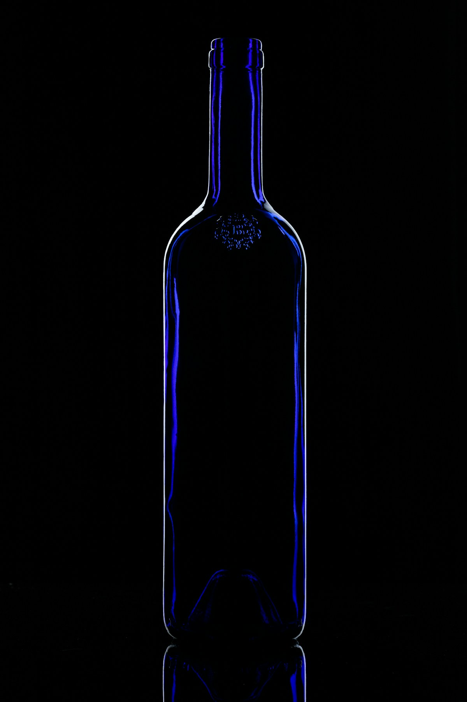
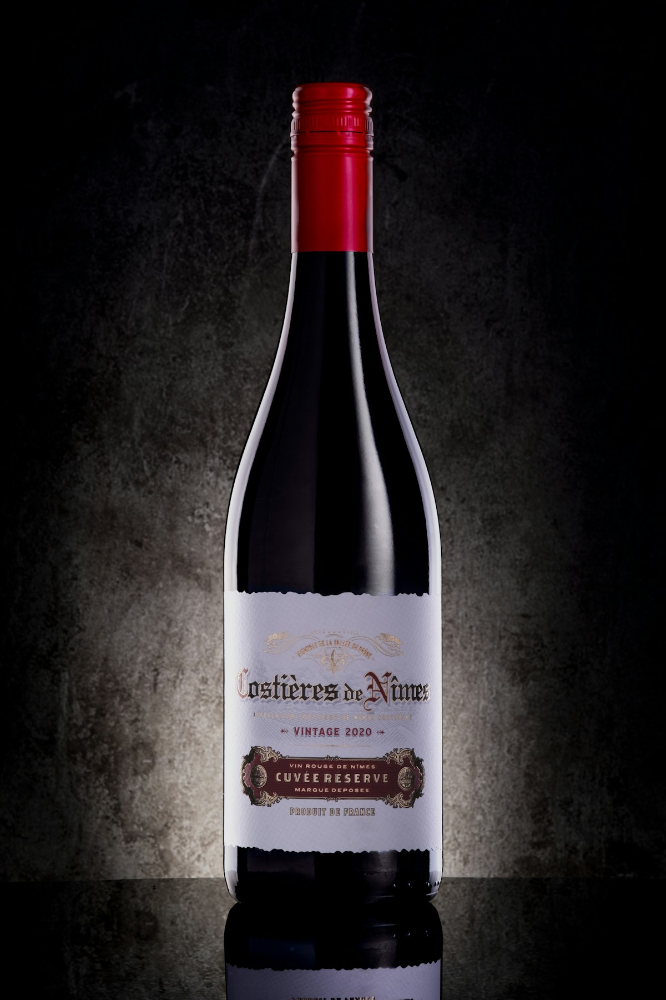
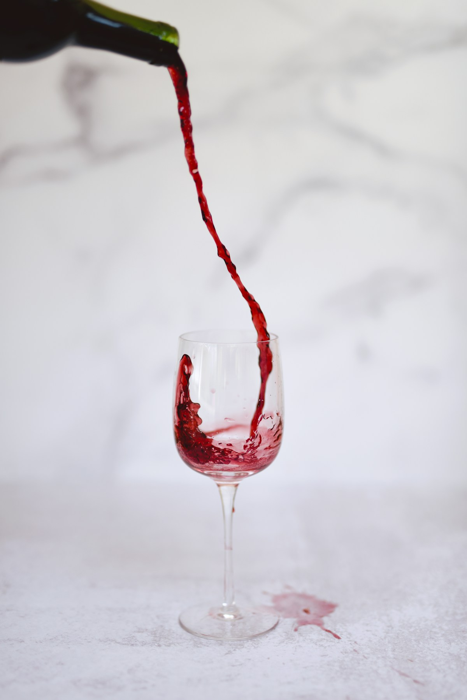
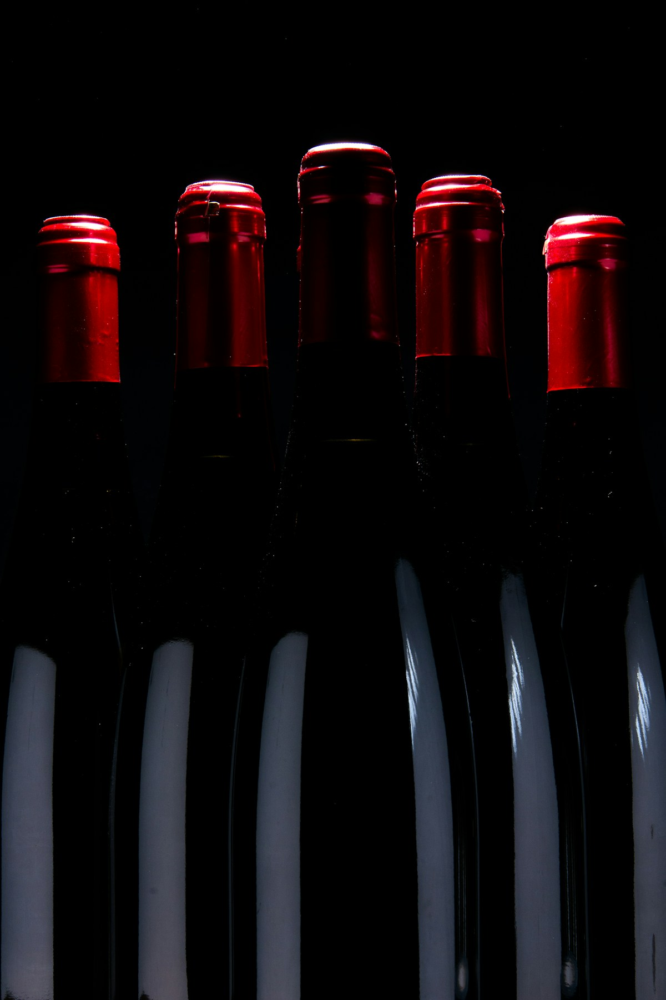
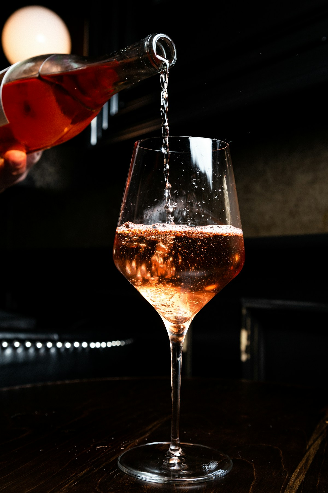
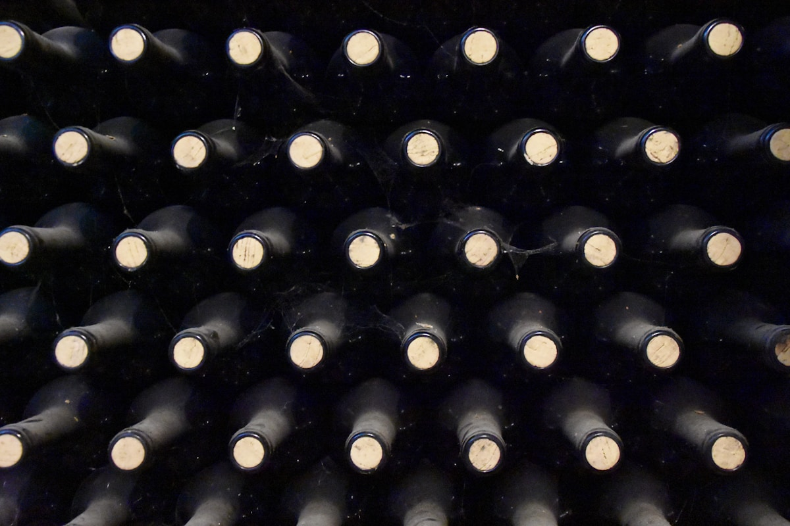

集安风土的极致表达
-8°C 自然冰冻采摘，金黄琥珀色泽。蜜糖、杏干与热带水果馥郁芬芳，甘甜与酸度完美平衡。

精选北冰红葡萄，精致 180ml 瓶身。深宝石红色，蜂蜜与红莓交织，口感圆润饱满。

传统瓶内二次发酵，细腻持久气泡升腾。柑橘、白花与烤面包香气层叠，活泼酸度带来愉悦开场。

精选赤霞珠与品丽珠混酿，法国橡木桶 12 个月。黑醋栗、雪松与巧克力复杂香气，单宁柔滑如丝绒。

单品丽珠酿造，法国橡木桶 10 个月。覆盆子与紫罗兰花香，单宁细腻优雅，口感清新富有层次。

法国利穆赞橡木桶陈酿 10 年以上。琥珀色酒液散发香草、干果、可可与橡木醇厚芬芳，口感圆润绵长。
在美桦君昱庄园品鉴室，由资深侍酒师为您呈现一场难忘的味觉之旅。